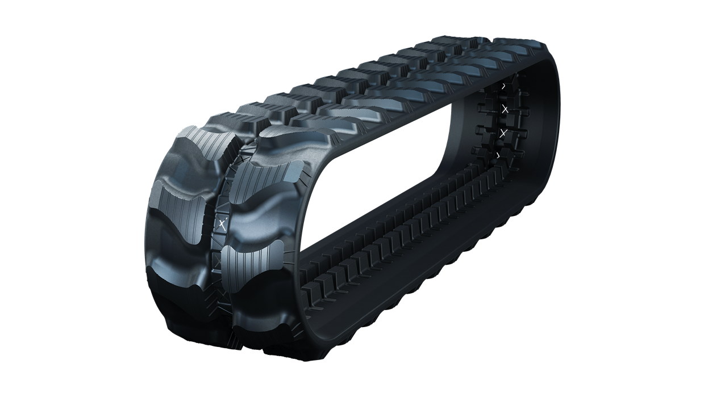
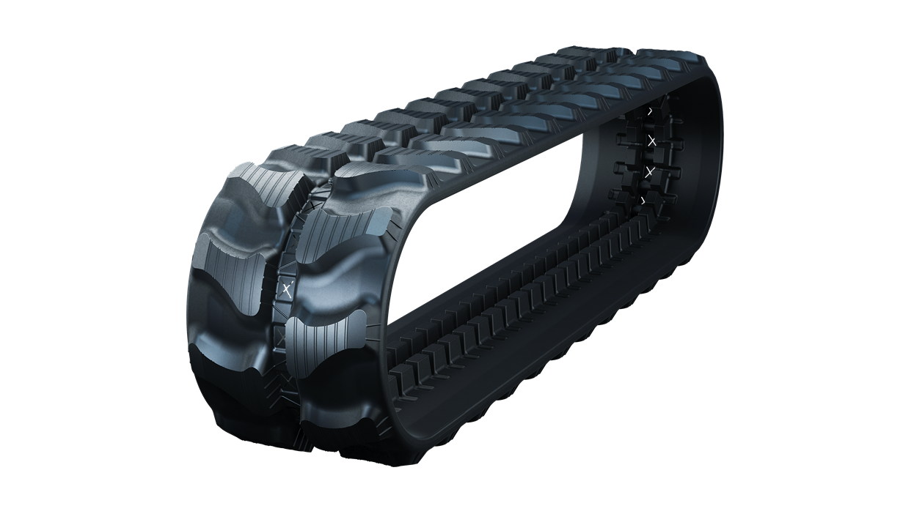

«Scout» поисково-разведовательный робот
Проект Scout создан в исследовательских целях, для проверки в первую очередь себя и своих умений. Робот, как и планировалось в начале, создан для помощи человеку с трудно доступными местами. Он оснащён камерой для видеотрансляции и управляется дистанционно с помощью контроллера Проект был создан абсолютно с нуля. Этот робот является единственным вариантом в своём виде. Все комплектующие части: корпус, фиксатор камеры, гусеницы и т.д. были смоделированы нами программой Fusion 360 и распечатаны на 3d-принтере из пластика PETG, а накладки на гусеницах были сделаны из филамента FLEX, который отлично заменяет резину
Безопасность - Наш робот Scout может осуществлять разведку в зонах с высоким уровнем радиации, области после аварий или катастроф, а также боевые зоны. Где находятся угрозы для человека. Это позволяет уменьшить риск для человеческой жизни, предоставляя данные и информацию из опасных областей
Технологические возможности - Scout оснащён передовыми технологиями, такими как камера и датчиками. Эти возможности делают его способным собирать, анализировать и передавать данные в реальном времени
Возможность получения данных с датчиков напрямую в мессенджер Telegram, представляет собой инновационный и удобный метод организации мониторинга в реальном времени.
Разработка разведывательно-поискового робота на радиоуправлении с камерой для выполнения поисковых работ в местах, где есть вероятность опасности для жизни человека
Робота можно использовать там, где по условиям техники безопасности присутствие человека недопустимо. Так же он может быть использован при проведении химических, радиационных и других разведок
Детали робота
- Управление: с помощью джойстика PS2X
- Микроконтроллер: Arduino Nano
- Двигатели: DC моторы для приведения в движение
- Сервоприводы: для управления камерой в 180 градусов по вертикали и горизонтали
- Камера: Foxeer для видеонаблюдения или передачи изображения в реальном времени
- Датчик газа: MQ2 для обнаружения различных газов
- Система гусениц: мощная система для передвижения по различным поверхностям или в труднодоступных местах.
- Модуль ESP8266: ESP8266 обеспечивает возможность беспроводной связь с Telegram


 

Настройка робота
Для старта робота просто включите выключатель на корпусе робота и на джойстике.
После включения через выключатель на корпусе робота должен загореться зеленый светодиод. После включения джойстика на нем должны начать мигать красная и зеленая лампы, что означает, что он подключается к роботу. После успешного подключения мигание должно остановиться, и обе лампы должны гореть красным и зеленым, не выключаясь.
Для получения данных с датчика необходимо включить робота вблизи модема или точки доступа к интернету с SSID: mma_scout и паролем: 12345678. После успешного подключения робота к интернету на корпусе должен загореться второй зеленый светодиод.
При покупке робота мы связываемся с клиентами, чтобы установить начального Telegram бота для их связи. Если необходимо изменить Telegram бота, необходимо вскрыть корпус робота и загрузить в ESP8266, который находится внутри, код, который будет прикреплен ниже. Для прошивки кода необходимо установить последнюю версию Arduino IDE и добавить "http://arduino.esp8266.com/stable/package_esp8266com_index.json" в дополнительные ссылки для менеджера плат. Также необходимо установить драйвер CH340 на ваш компьютер. После этого, с помощью ресурсов в интернете, можно загрузить ваш код на ESP8266 для прошивки.
В коде поменяйте API бота на ваш. При необходимости вы можете изменить данные для SSID и пароля от сети. API, SSID, PASS можно легко найти в коде благодаря комментариям.
После загрузки подождите, пока все загрузится успешно. При дополнительных вопросах вы можете обратиться в службу поддержки или позвонить на горячую линию, номер которой указан в конце страницы.